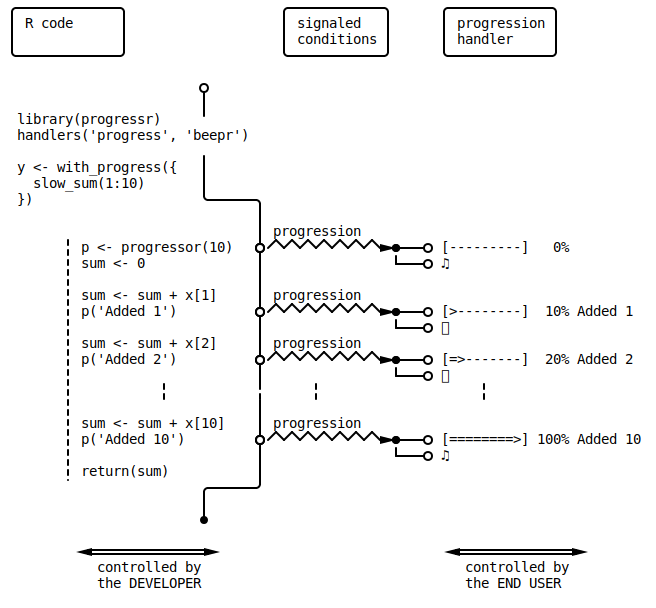

progressr: Appendix
Henrik Bengtsson
Source:vignettes/progressr-91-appendix.md
progressr-91-appendix.RmdHow tos
Report on progress in non-interactive mode (“batch mode”)
When running R from the command line, R runs in a non-interactive
mode (interactive() returns FALSE). The
default behavior of progressr is to not report
on progress in non-interactive mode. To report on progress also then,
set R options progressr.enable or environment variable
R_PROGRESSR_ENABLE to TRUE. For example,
will not report on progress, whereas
$ export R_PROGRESSR_ENABLE=TRUE
$ Rscript -e "library(progressr)" -e "with_progress(y <- slow_sum(1:10))"will.
Notes of caution
Avoid sending progress updates too frequently
Signaling progress updates comes with some overhead. In situations
where we use progress updates, this overhead is typically much smaller
than the task we are processing in each step. However, if the task we
iterate over is quick, then the extra time induced by the progress
updates might end up dominating the overall processing time. If that is
the case, a simple solution is to only signal progress updates every nth
step. Here is a version of slow_sum() that signals progress
every 10th iteration:
slow_sum <- function(x) {
p <- progressr::progressor(length(x) / 10)
sum <- 0
for (kk in seq_along(x)) {
Sys.sleep(0.1)
sum <- sum + x[kk]
if (kk %% 10 == 0) p(message = sprintf("Adding %g", x[kk]))
}
sum
}The overhead of progress signaling may depend on context. For example, in parallel processing with near-live progress updates via ‘multisession’ futures, each progress update is communicated via a socket connections back to the main R session. These connections might become clogged up if progress updates are too frequent.
Known Limitations
The global progress handler cannot be set during package load
It is not possible to call
handlers(global = TRUE) in all circumstances. For example,
it cannot be called within tryCatch() and
withCallingHandlers();
> tryCatch(handlers(global = TRUE), error = identity)
Error in globalCallingHandlers(NULL) :
should not be called with handlers on the stackThis is not a bug - neither in progressr nor in R itself. It’s due to a conservative design on how global calling handlers should work in R. If it were allowed, there’s a risk we might end up getting weird and unpredictable behaviors when messages, warnings, errors, and other types of conditions are signaled.
Because tryCatch() and
withCallingHandlers() are used in many places throughout
base R, this means that we also cannot call
handlers(global = TRUE) as part of a package’s startup
process, e.g. .onLoad() or .onAttach().
Another example of this error is if
handlers(global = TRUE) is used inside package vignettes
and dynamic documents such as Rmarkdown. In such cases, the global
progress handler has to be enabled prior to processing the
document, e.g.
A progressor cannot be created in the global environment
It is not possible to create a progressor in the global environment,
e.g. in the top-level of a script. It can only be created inside a
function, within with_progress({ ... }),
local({ ... }), or a similar construct. For example, the
following:
library(progressr)
handlers(global = TRUE)
xs <- 1:5
p <- progressor(along = xs)
y <- lapply(xs, function(x) {
Sys.sleep(0.1)
p(sprintf("x=%g", x))
sqrt(x)
})results in an error if tried:
Error in progressor(along = xs) :
A progressor must not be created in the global environment unless wrapped in a
with_progress() or without_progress() call. Alternatively, create it inside a
function or in a local() environment to make sure there is a finite lifespan
of the progressorThe solution is to wrap it in a local({ ... }) call, or
more explicitly, in a with_progress({ ... }) call:
library(progressr)
handlers(global = TRUE)
xs <- 1:5
with_progress({
p <- progressor(along = xs)
y <- lapply(xs, function(x) {
Sys.sleep(0.1)
p(sprintf("x=%g", x))
sqrt(x)
})
})
# |==================== | 40%The main reason for this is to limit the lifespan of each progressor. If we created it in the global environment, there is a significant risk it would never finish and block all of the following progressors.
No coloring by the ‘cli’ and ‘crayon’ packages
The cli package
can be used to output colored text and messages in the terminal,
e.g. message(cli::col_blue("hey")). However,
cli disables such coloring by default when there is an
active progressor. The workaround is to set cli option
cli.num_colors to:
options(cli.num_colors = cli::num_ansi_colors())This will force cli to use the same number of colors with and without an active progressor.
The same happens when using the superseeded crayon package for colorization. To re-enable coloring for crayon, set the same (sic!) above R options.
The technical reason for cli and crayon disabling coloring, is that the progressr package buffers standard output using a sink, which these packages consider to be mono-color only.
Known Issues
RStudio bug #16331: Setting global progressr handlers during startup does not work
Setting the global progressr handler in ~/.Rprofile does
not work in RStudio 2025.09:
if (requireNamespace("progressr", quietly = TRUE)) {
progressr::handlers(global = TRUE)
}This is due to a bug introduced in RStudio 2025.09, which has been fixed for the next release RStudio 2025.11. If you are using RStudio 2025.09, the workaround is to instead use:
if (requireNamespace("progressr", quietly = TRUE)) {
progressr::handlers(global = TRUE)
## Workaround for RStudio 2025.09 console bug #16331
if (nzchar(Sys.getenv("RSTUDIO")) && !nzchar(Sys.getenv("RSTUDIO_TERM"))) {
invisible(addTaskCallback(function(...) {
ver <- RStudio.Version()$version
if (ver >= "2025.09" && ver < "2025.11") {
message("Workaround for RStudio 2025.09 bug #16331: Added progressr global handler")
progressr::handlers(global = TRUE)
} else {
warning("Workaround for RStudio 2025.09 bug #16331: Not needed in RStudio v", ver, ". Please remove task callback 'rstudio::progressr::once' in your Rprofile startup file", call. = FALSE, immediate. = TRUE)
}
removeTaskCallback("rstudio::progressr::once")
}, name = "rstudio::progressr::once"))
}
}Positron bug #6892: Setting global progressr handlers during startup does not work
Positron does not support setting global calling handlers during R’s
startup process, e.g. in ~/.Rprofile. Even if such handlers
are registered, they have no effect. This is a bug in
Positron (2025-03-20), which was most recently confirmed with
Position 2025.09.0 on Linux. Because of this, having something like in
your ~/.Rprofile:
if (requireNamespace("progressr", quietly = TRUE)) {
progressr::handlers(global = TRUE)
}will have no effect. If used, the workaround is to manually re-registering all calling handlers, which can be done as:
if (requireNamespace("progressr", quietly = TRUE)) {
progressr::handlers(global = TRUE)
## Workaround for Positron (>= 2025.09) bug #16331
if (nzchar(Sys.getenv("POSITRON"))) local({
ver <- numeric_version(Sys.getenv("POSITRON_VERSION"))
if (ver >= "2025.09") {
message("Workaround for Positron (>= 2025.09) bug #6892: progressr global handler will be installed *after* the next call has been completed")
invisible(addTaskCallback(function(...) {
message("Workaround for Positron (>= 2025.09) bug #6892: re-installed progressr global handler")
globalCallingHandlers(globalCallingHandlers(NULL))
removeTaskCallback("positron::progressr::once")
}, name = "positron::progressr::once"))
}
})
}Alternatively, call:
or
at the prompt.
Positron: Messages add extra newline before the final progress step
One of the features of progressr is that messages
are buffered during progress reporting and relayed as soon as possible,
which typically happens just before handlers re-render the progress
output. This way you can use message() as usual, regardless
whether progress is reported or not.
Currently, when using Positron (e.g. Positron 2025.09.0), any
message() output adds an extra newline before the
final progress step is reported, e.g.
> progressr::handlers(global = TRUE)
> progressr::handlers("cli")
> y <- progressr::slow_sum(1:5, message = TRUE)
M: Added value 1
M: Added value 2
M: Added value 3
M: Added value 4
M: Added value 5
> I do not fully understand the reason for this, but I hope we can get to the bottom of it and fix it, either in progressr or in Positron, e.g. Bug #9486 (2025-09-18).
Jupyter: Reporting progress to stderr (default) does not work
The default for most terminal progress renders, including the ones for progressr, display the progress on standard error (stderr). Due to a limitation in Jupyter, this default does not work there. The reason is that Jupyter silently drops any output sent to stderr, e.g.
If we try the following
there will be no progress being reported. This is not specific to progressr, we have the same problem with for instance cli. Try for instance,
void <- cli::cli_progress_demo(delay = 1.0)The workaround is to direct all progress output to the standard output (stdout) when working in Jupyter. For this to work, we also need to disable the buffering (“delaying”) of any other output to stdout.
library(progressr)
handlers(globals = TRUE)
## Workaround for Jupyter
options(progressr.enable = TRUE, progressr.delay_stdout = FALSE)
## Jupyter requires that progress is rendered to standard output;
## it does not work with the default standard error
handlers(handler_txtprogressbar(file = stdout()))
y <- slow_sum(1:20)Jupyter bug #732 - handlers(“progress”) output is messy
Jupyter has other outputting issues. Specifically, Jupyter injects an extra newline at the end of every message, e.g.
> message("abc", appendLF = FALSE); message("def", appendLF = FALSE)
abc
def
> message("abc"); message("def")
abc
def
>This causes any progress framework (e.g. the progress package) that reports via messages to render progress output very poorly or not at all.
Design and Implementation
Under the hood
When using the progressr package, progression
updates are communicated via R’s condition framework, which provides
methods for creating, signaling, capturing, muffling, and relaying
conditions. Progression updates are of classes progression
and immediateCondition(*). The below figure gives an
example how progression conditions are created, signaled, and
rendered.
(*) The immediateCondition class of conditions are
relayed as soon as possible by the future framework,
which means that progression updates produced in parallel workers are
reported to the end user as soon as the main R session have received
them.

Figure: Sequence diagram illustrating how signaled progression
conditions are captured by with_progress(), or the global
progression handler, and relayed to the two progression handlers
‘progress’ (a progress bar in the terminal) and ‘beepr’ (auditory) that
the end user has chosen.
Roadmap
Because this project is under active development, the progressr API is currently kept at a very minimum. This will allow for the framework and the API to evolve while minimizing the risk for breaking code that depends on it. The roadmap for developing the API is roughly:
For a more up-to-date view on what features might be added, see https://github.com/futureverse/progressr/issues.